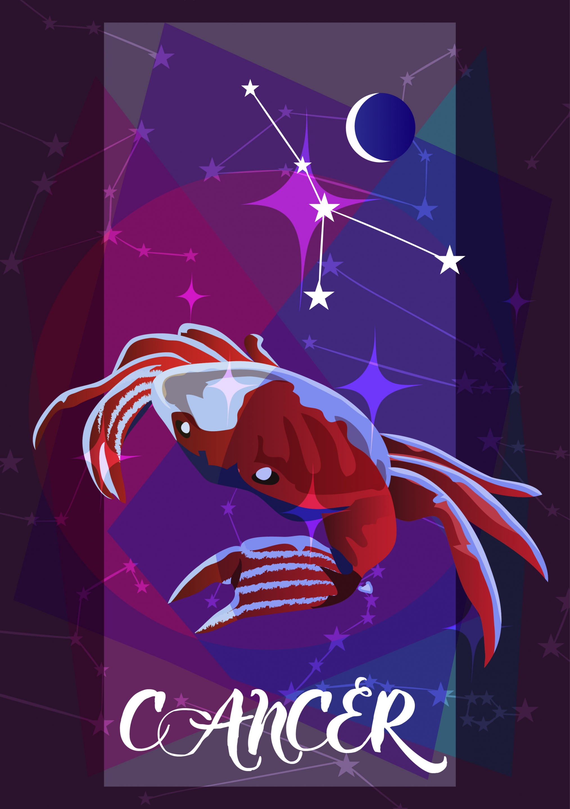

CRAB | JUN 21 - JUL 22
INTUITIVE, EMOTIONAL, INTELLIGENT, PASSIONATE
| Element: water | Polarity : Negative |
| Quality : Cardinal | Ruling Planet: Moon |
| Spirit Color : Violet | Lucky Gem : Ruby, pearl |
| Flower : Orchid and white rose | Top Love Matches : Tuarus&Pisces |
| Ruling House : Fourth |
Emotional, intuitive, and practically psychic; ruled by the moon and characterized by the crab, Cancer has so much going on in its watery depths. Cancers may seem prickly and standoffish at first meeting, once they make the decision to become friends with someone, that person has a friend for life. Most Cancers have been called psychic at some point, and with good reason—Cancer can often intuit relationships, ideas, and motivations before anyone has actually spoken. That can make for challenging interactions with this sign—Cancer hates small talk, especially when it contains white lies (like saying, "How nice to see you!" when it's clear that both parties would rather avoid each other). That's why social gatherings can be overwhelming for Cancers. They'd much rather spend time in small groups where everyone is on the same page.
In romance, Cancer is a giving and generous lover and expects the same in return. The Crab is above mind games and hates the thrill of the chase—if you love someone, why not say it now? It's not uncommon for Cancer to fall into committed love after just a few days or weeks, and even though that decision is sudden, it can easily last a lifetime. Cancers tends to be happiest when they're part of a pair, and the best relationship brings out their greatest traits. But even though a Cancer thrives in a duo, he or she also has an independent streak, and needs plenty of time to do things solo. This sign has an active internal life, and is often are happy living in the realm of imagination. Sometimes Cancers need help from one of the more grounded signs to make their dreams a reality.
Cancer loves creating and needs some type of creative outlet, whether it's painting, writing, or even just reading. Cancer also loves connecting to a higher power, and may find comfort in religion or spiritual practices. And even though Crabs can be intense, they also have a funny side with a wry sense of humor, and they're adept at observing and mimicking people around them. Finally, Cancer is incredibly loyal, sometimes to a fault. Cancers will go to the ends of the earth and even against their own beliefs to help someone they love. Learning how to step up for what they believe in—even if it means turning down or against a friend—is a lifelong lesson for Cancer. As the emotional heart of the Zodiac, this sign teaches everyone else that, while there's so much in life that we may not be able to see, we should still pay attention to the unseen because it does exist—and we do need it!
"I feel, therefore I am."
With off-the-charts emotional intelligence, Cancer quickly cuts through the BS and noise to the heart of an issue. Crabs don't need all the facts and figures to know the right course of action, and their ability to trust intuition without judgment can aid them well. This gift is one that other Zodiac signs can learn from and be inspired by.
While Cancer easily and accurately reads situations when they're presented, he or she may not share those opinions with others. Speaking up is key, because turning inward with emotions means that those emotions may erupt unexpectedly. Crabs also expect others to know what they're thinking, which is another source of pent-up frustration. Learning to voice opinions, even if it leads to conflict, is a lifelong lesson for Cancer.
Emotions. While many Cancers probably get the message to "be less emotional," the huge range and depths of Cancers' emotions may in fact be their secret weapon. When this sign is happy, the world knows it; when they're unhappy, the world will work to shift their situation. In general, a Cancer's mercurial moods do a better job than a long speech, and by sharing their emotions with the world, Crabs help other signs tap into theirs as well.
Selena Gomez, Ariana Grande, King Bach, Lionel Messi, Luke Bryan, Kevin Hart